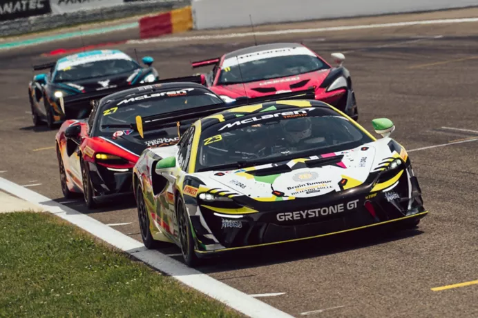
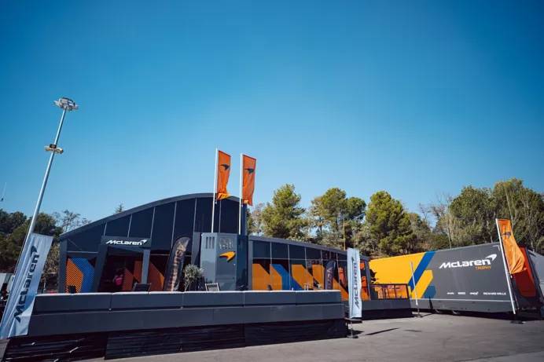
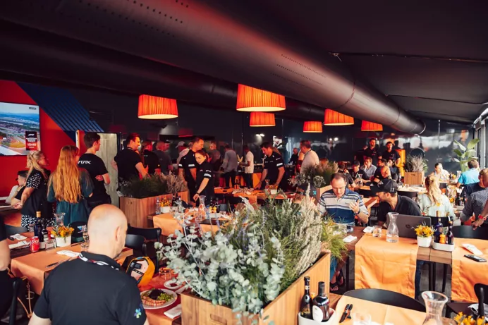
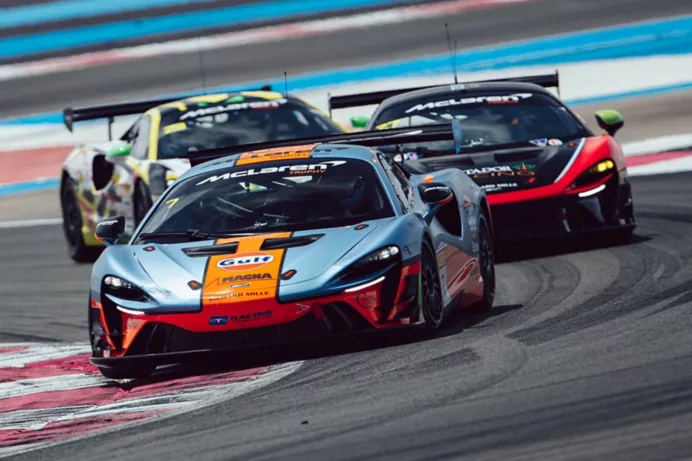

MCLAREN TROPHY IS COMING TO AMERICA
Next season, a new chapter of McLaren Motorsport history will be written, when McLaren's one-make race series - McLaren Trophy - launches in America
From its very first race in 2023, the McLaren Trophy Europe provided unmissable action, with competitive grids of Artura Trophy and 570S Trophy racing cars battling it out on major circuits from Spa to the Nürburgring.
Now McLaren has announced a sister series to build on its success – the McLaren Trophy America. Launching in 2025, the new championship is set to bring the same energy to some of the most iconic US circuits, while also giving amateur and pro drivers a chance to develop their racing careers.
As in the European series, Pro-Am driver pairings will together take on ten 50-minute races over five race weekends, the emphasis being very much on the Amateur – or Bronze-rated – driver.
The McLaren Trophy America grid also comprises two classes, based on Artura Trophy or 570S Trophy race cars respectively.
The Artura Trophy is designed exclusively for the McLaren Trophy championships and it takes all the lightweight advantages of its road-car sibling and dials them up for the track. With the McLaren Carbon Lightweight Architecture (MCLA) at its core, featuring a carbon fibre monocell, the car is strong, safe and incredibly agile. The twin-turbocharged V6 engine, tuned to 585PS, is combined with a suite of track-focused performance upgrades, including a high-downforce rear wing and lightweight exhaust, making it capable of lapping within just three seconds of a GT3 car.
McLaren has also baked accessibility into the Artura Trophy’s design, not only making it engaging and confidence inspiring for drivers of all abilities, but also for those tasked with servicing it. For instance, the engine can be accessed without removing the huge rear wing. The Artura Trophy can also be easily converted to full GT4 specification and back again, allowing drivers to contest other championships, even over consecutive race weekends.
   
Existing examples of the 570S Trophy – the Artura’s predecessor – are also welcome on the McLaren Trophy, America grid, offering another exciting entry point for aspiring drivers. The 540PS 570S Trophy remains a phenomenal machine, having been developed from the 570S GT4.
Whichever car racers choose, all will be prepared by independent teams, with McLaren Customer Racing waiting in the wings with spare parts and technical know-how.
If the European series is anything to go by, the social side of the McLaren Trophy, America will be just as enticing as the competition, with drivers, friends, family and sponsors all able to relax in a McLaren Race Centre that will be familiar to anyone who’s enjoyed VIP hospitality in the Formula 1 paddock.